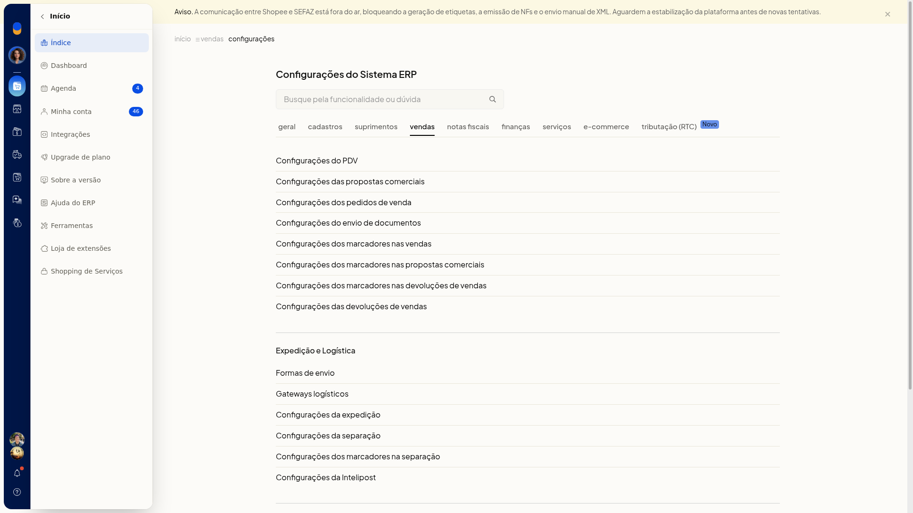
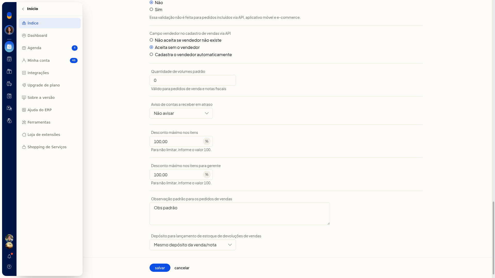

Configurações dos pedidos de venda
No ERP da Olist, as configurações dos pedidos de venda definem como o pedido é exibido, impresso e emitido. Você ajusta exibição, impressão, consignação, numeração, estoque, descontos e regras de emissão.
O formulário fica em Configurações > Configurações ERP > Vendas > Configurações dos pedidos de venda.
Importante
- Com Bloquear emissão de pedidos de venda com estoques que não podem ser atendidos em Sim, a validação não vale para pedidos incluídos via API, aplicativo móvel e ecommerce.
- Com Bloquear emissão de pedidos cujo cliente possui contas em atraso habilitado, a regra vale para pedidos de venda, exceto API e aplicativo, e para o PDV da Olist.
- O marcador de status do pagamento não reflete o status do pagamento no integrador.
- Para não limitar Desconto máximo nos itens ou Desconto máximo nos itens para gerente, informe 100.
- Quantidade de volumes padrão vale para pedidos de venda e notas fiscais.
- Exibir alerta quando comissão estiver zerada considera o vendedor selecionado e a comissão zerada em todos os itens.
Instruções
-
Acesse Configurações > Configurações ERP.
-
Em Vendas, clique em Configurações dos pedidos de venda.

-
Ajuste as opções. Nenhuma delas é obrigatória.
Exibição
- Exibir campo preço de lista e desconto nos itens dos pedidos e propostas comerciais
- Exibir alerta quando endereço do cliente estiver incompleto
- Exibir alerta quando comissão estiver zerada: quando o vendedor estiver selecionado e a comissão de todos os itens estiver zerada.
- Permitir a visualização das contas a receber em aberto nos pedidos/notas fiscais
- Exibir marcador com status do pagamento do pedido de venda: a visualização não reflete o status do pagamento no integrador.
- Em Exibir detalhes da venda nos pedidos, Exibir dados adicionais nos pedidos e Exibir transportador nos pedidos, escolha Sim, Não ou Exibir recolhido.

Impressão
- Imprimir número do pedido em código de barras
- Imprimir descrição complementar dos produtos nos pedidos de venda
- Imprimir cabeçalho na impressão de pedidos para produção
- Incluir campos de data e assinatura para comprovação de entrega na impressão de pedidos de venda
- Imprimir endereço da empresa
- Imprimir a imagem dos produtos na impressão detalhada do pedido de venda
- Imprimir nome fantasia ao invés de razão social nas vendas e propostas
- Calcular impostos nas vendas
- Imprimir impostos dos itens na impressão detalhada do pedido de venda: selecione quais impostos imprimir no pedido de venda.
- Em Ordenação dos itens na impressão dos pedidos de venda, escolha Inclusão no pedido, Código (SKU) do produto ou Descrição do produto.

Consignação
- Bloquear novas consignações em caso de atraso: novas vendas por consignação ficam bloqueadas para clientes com pedidos vencidos em aberto.
- Limite de produtos: quantidade máxima de produtos em cada venda por consignação.
- Observação padrão para as vendas consignadas: preenche Observações de cada nova venda consignada e sai no comprovante, acima da assinatura.
Emissão
- Vendedor obrigatório
- Bloquear emissão de pedidos cujo cliente possui contas em atraso: vale para pedidos de venda, exceto API e aplicativo, e para o PDV da Olist.
- Bloquear emissão de pedidos sem forma de recebimento e condições de pagamento
- Permitir edição de pedidos de venda para o vendedor
- Permitir a venda de produtos não cadastrados
- Inserir automaticamente o marcador "1ª venda": aplicado nas próximas vendas em que o cliente faz a primeira compra.
- Enviar marcadores da venda para as notas fiscais: os marcadores do pedido são replicados na nota fiscal quando ela é gerada.
- Bloquear a exclusão de ocorrência das vendas: a remoção de ocorrências nos pedidos de venda fica desabilitada.
- Mudar status do pedido de "em aberto" para "aprovado" após a identificação do pagamento: ao identificar o pagamento de pelo menos uma conta a receber do pedido, o status vai para aprovado.
- Considerar peso das embalagens no peso bruto da venda: soma o peso das embalagens de envio ao peso bruto para frete e logística.
Numeração e estoque
- Em Numeração dos pedidos de venda, escolha Sequencial ou Manual.
- Em Modalidade de lançamento de estoque para fabricado, escolha entre produto fabricado ou matéria-prima: lançar estoque do produto fabricado ou lançar estoque dos componentes.
- Em Bloquear emissão de pedidos de venda com estoques que não podem ser atendidos, escolha Não ou Sim. Essa validação não é feita para pedidos incluídos via API, aplicativo móvel e ecommerce.

Volumes, descontos e devolução
- Em Campo vendedor no cadastro de vendas via API, escolha Não aceita se vendedor não existe, Aceita sem o vendedor ou Cadastra o vendedor automaticamente.
- Informe Quantidade de volumes padrão. O valor vale para pedidos de venda e notas fiscais.
- Em Aviso de contas a receber em atraso, escolha Não avisar ou Avisar a partir de 1 a 10 dias.
- Informe Desconto máximo nos itens e Desconto máximo nos itens para gerente em percentual. Para não limitar, informe 100.
- Preencha Observação padrão para os pedidos de vendas.
- Em Depósito para lançamento de estoque de devoluções de vendas, escolha Mesmo depósito da venda/nota ou um depósito da empresa.

- Clique em Salvar para gravar as regras dos pedidos de venda.